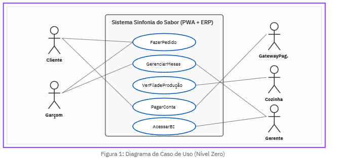

Projeto
Sinfonia do Sabor
Plano executivo de transformação digital e implantação de gestão ágil para modernização de atendimento e inteligência de negócios.
Equipe Técnica
Tamires, Lucas, Ronaldo,
Thaynan, Edison
Professor
Marcelo Vasconcelos Fatudo
Sumário
A solução recomendada adota uma abordagem híbrida.
A infraestrutura, contratações e implantação seguem uma lógica preditiva, enquanto o desenvolvimento do produto digital é conduzido em ciclos iterativos e ágeis curtos, com validações contínuas junto ao gerente do restaurante.
1. Escopo, Requisitos e MVP
Pilares fundamentais da modernização da operação.
PWA & Autoatendimento
Cardápio Digital interativo via QR Code, Gestão de Carrinho, Pedidos direto na mesa e integração fluida com Gateway.
Operação & Cozinha
Sistema KDS (Kitchen Display System) para sincronização de comandas, redução de erros e giro rápido das mesas.
Dashboard Gerencial
Módulo de BI para o Gerente com Requisitos Não Funcionais rigorosos e métricas de desempenho de vendas.
2. Cronograma e Riscos Críticos
Ciclo completo (Iniciação ao Go-Live)
Plano de Resposta a Riscos
Expansão de Escopo
Resposta Rápida: Congelar baseline. Novas ideias vão para o Backlog.
Atraso em Integrações
Resposta Rápida: Prototipagem antecipada e plano de contingência (fallback).
Resistência da Equipe
Resposta Rápida: Treinamento prático e suporte in-loco no lançamento.
3. Metodologia Ágil (Scrum)
Execução do desenvolvimento do produto digital.
Desenvolvimento Iterativo
O Gerente atua como Product Owner, garantindo que as entregas agreguem valor ao negócio. O framework alinha-se à estratégia híbrida do projeto.
Dinâmica Rigorosa das Sprints
O ciclo de desenvolvimento (Semanas 5 a 11) será dividido em exatas 3 Sprints de 2 semanas cada, obedecendo ao limite oficial do Scrum Guide e garantindo entregas parciais rápidas.
1. Planning
Detalhes
2. Daily
Detalhes
3. Review
Detalhes
4. Retro
Detalhes
4. Business Model Canvas
• Gateways de pagamento (Mercado Pago)
• Provedor Cloud (AWS/Azure)
• Fornecedor API WhatsApp
• Manutenção do PWA
• Integração segura
• Plataforma PWA/Backoffice
• Infraestrutura Nuvem
Cliente: Atendimento ágil, sem filas, zero erros via autoatendimento.
Operação: Cozinha sincronizada via KDS.
Gestão: Decisões baseadas em BI real-time.
• Self-service nativo
• Prog. Fidelidade
• Notificações WPP
• Web App via QR Code
• KDS / Tablets
B2C: Clientes frequentes e novos.
B2B: Gestão, Garçons e Cozinheiros.
1. Aumento do Ticket Médio (Upsell)
2. Retenção (Fidelidade)
3. Giro mais rápido das mesas
5. Modelagem e UML

6. Stack Tecnológico e Arquitetura
Base tecnológica garantindo alta disponibilidade (99,5%) e performance (Rnf).
Frontend PWA
Interface responsiva via QR Code focada em conversão e usabilidade rápida.
API RESTful
Backend seguro comunicando em JSON, orquestrando pagamentos e regras de negócio.
WebSockets
Comunicação bidirecional para atualizar pedidos no KDS em tempo real (Real-time).
Banco de Dados
Estrutura relacional robusta (Usuario, Mesa, Produto, Pedido, Pagamento).
Muito Obrigado!
Agradecemos a atenção e a oportunidade de apresentar o Projeto Sinfonia do Sabor. Estamos à disposição para levar essa transformação digital ao restaurante com excelência, agilidade e foco no cliente.
Equipe do Projeto
Tamires Dias, Lucas Cunha, Ronaldo Carlos, Thaynan Luiz e Edison Marcos.
Agradecimento Especial
Ao Professor Marcelo Vasconcelos Fatudo e a todos que contribuíram para a construção desta proposta.
Assistente do Projeto
Powered by Gemini